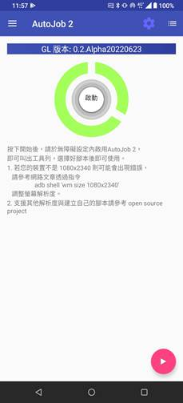
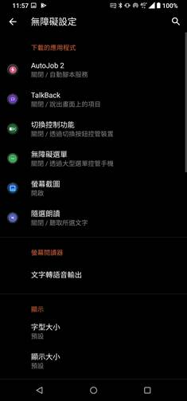
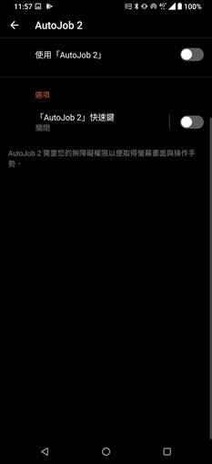
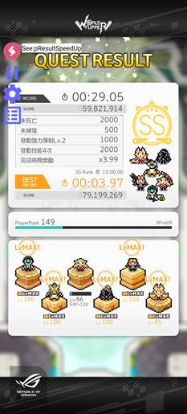
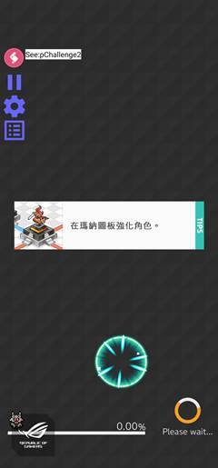
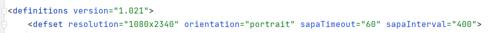
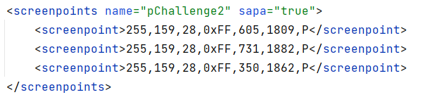
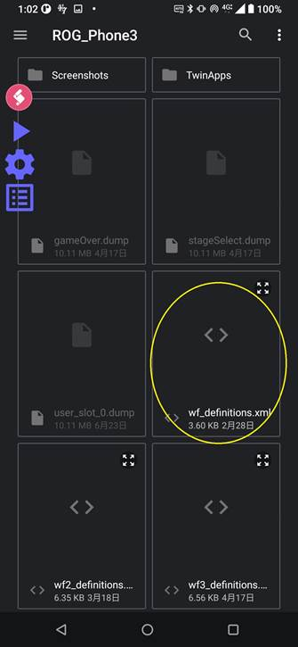
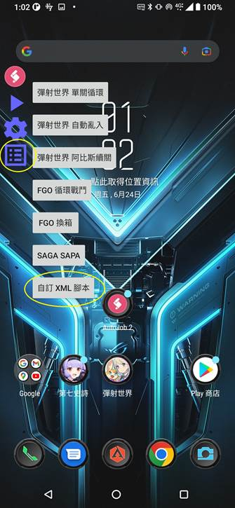

Josh Automation
什麼是Josh Automation？
Josh Automation是一個基於Android的自動化腳本引擎。
AutoJob 2是使用Josh Automation的Android App，目前支援FGO(日版) 自動循環戰鬥、自動換箱以及彈射世界(台版)自動重複戰鬥、自動亂入協力；以及支援各種客製化腳本相容模式。以上功能將在以下章節中詳細說明。
AutoJob 2裝置需求
l Android 11以上 (Android API 30)
l 螢幕解析度 1080x2340 (可透過adb shell wm size 1080x2340 調整，請自行Google)
如何使用
1. 打開AutoJob 2並依照指示同意”顯示在其他應用程式上層”權限
2.
按下開始後會將您導至無障礙設定畫面

3.
選擇AutoJob 2並啟用，接著允許完整控制權即可叫出工具列

4.
在遊戲上選擇工具列上的 Play 圖示即可開始運作，點按圖示即可收縮工具列

如何建立自己的腳本
最簡單建立自己的腳本為使用SAPA範本，SAPA為SeeAnyPressAny即看到某個座標的關鍵顏色就點其座標的設計。
相關程式: com.mumu.android.joshautomation.autojob.SeeAnyPressAny.java
可參考: wf_definition.xml
1.
首先建立XML檔案表頭如下

<definitions> 屬性內只包含 version 請填入浮點數，不知要填什麼的可以寫 1.0
<definitions> 內包含多個 <defset>
<defset> 屬性內包含
resultion 此defset定義在哪一個解析度上，例如1080x2340
orientation 為遊戲的螢幕方向 portrait 為直立， landscape 為橫向
sapaTimeout 為腳本的timeout時間單位是秒數
sapaInterval 為每間格多少毫秒(ms)
檢查一次，最少不可低於333毫秒
2.
建立檢查點

<defset> 內包含多個 <screenpoints> 點集合 可定義 name 以及是否為 sapa 點，name便會顯示在UI介面上
<screenpoint>內定義一個點的座標以及顏色前面四個值表示顏色 R,G,B,A 後面三個為座標 X,Y,O
例如 255,159,28,0xff,605,1809,P 所表示的是 顏色 (255,159,28,0xff) 座標 (605, 1809, Portrait)
數字部分可以寫十進位也可以寫0x開頭的十六進位
座標方向可以寫P或Portrait表示直立，寫L或Landscape表示橫向
裡面以逗號分隔，不可包含空格
3.
程式會由上往下檢查每一個 <screenpoints> 內的所有點，顏色皆符合才會觸發吻合
並且點最上面的<screenpoint> 點的座標位置，以上面的檢查點為例
座標 (605,1809) 必須是顏色 (255,159,28,0xff)
座標 (731,1882) 必須是顏色 (255,159,28,0xff)
座標 (350,1862) 必須是顏色 (255,159,28,0xff)
就會觸發點第一個位置 (605, 1809)
如果想要不判斷點的位置的顏色請將顏色設為 (0, 0, 0, 0)
執行自己的腳本
將您的definition XML檔案放在裝置內，在設定選擇該檔案，並選擇自訂XML腳本工作
